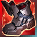
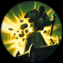
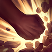
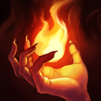
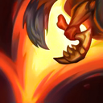
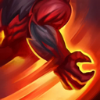

起手裝備
- 紅水晶
三相、黑切、史特拉克加雙防及復活末段與最新單人線相符，保留五成裝與一條防鞋升級。



五件成裝與鞋子分開列示；起手與核心是購買路線，不是額外佔用的成裝欄位。鞋子完成時機仍依對線壓力與回城金錢調整。




瞬疾步法配迷你型態拉扯，爆破維持邊線收益，骨甲應對近身爆發；不為版本換標籤而改動整套。


吶兒：閃現調整進退，點燃補短換血收尾與重創；沒有擊殺窗口時不要為點燃強行離開兵線。
加點優先：Q > W > E
保留Q > W > E，逐級表與7.3b巴龍路分頁一致；大絕仍在5、9、13級，基本技能各四點。 補回迷你W主動攻速，移除E提供攻速的錯置敘述；三環仍為自動觸發，未新增未驗證完整數值表。
戰鬥會累積怒氣；滿怒後變成狂暴吶兒，獲得更高生命與防禦，不同型態擁有不同技能。
小型態投迴力鏢傷害並緩速；大型態丟岩石造成範圍傷害與緩速，撿回可縮短冷卻。
迷你型態：同一目標每第三次普攻或技能命中會觸發額外傷害與跑速，這是自動觸發；主動施放二技可短暫提高攻速。狂暴型態：重擊前方造成傷害與暈眩。

迷你型態跳向指定位置，落在單位上可彈跳更遠；敵方落點受到傷害與緩速。狂暴型態改為範圍重踏；攻速主動屬於迷你二技，不是三技跳躍。

大型態把周圍敵人擊向指定方向；撞牆時造成更高傷害並暈眩。
迷你二技三環由同一目標第三次普攻或技能命中自動觸發；二技主動另提供攻速，三技則負責跳躍／彈跳。不要把三環當按鍵引爆。
迴力鏢 → 普攻疊層 → 第三次命中觸發三環
迷你二技的三環由同一目標累積三次普攻或技能命中自動觸發，不需按二技引爆；二技主動另提供攻速，可在安全輸出時先開，再利用迴力鏢與普攻湊滿三次。
3技跳躍變身 → 4技推牆 → 2技暈眩 → 1技巨岩
怒氣接近滿值時用三技進場變身，把敵人推向牆面後接續暈眩。
4技 → 2技 → 1技 → 3技
巨型型態從側面切入，優先用大絕命中多人，再補二技與巨岩控制。
前期以回力鏢與普攻磨血，怒氣接近滿值時才準備主動換血。
三相之力 → 黑色切割者 → 史特拉克手套為主要成裝順序。保留三相、黑切、史特拉克；二、三級防鞋維持物理線承傷，不把鞋視為兩格成裝。
後期找牆角大絕開團；若怒氣不對就先拉扯，避免用迷你型態硬接正面。
卡桑帝、墨菲特、鄂爾能硬開或吸收遠距磨血；怒氣不足時不跟進物件團。
對局名單是機制與分路判斷，不代表固定勝率；需同時看雙方熟練度、兵線與陣容。
卡桑帝、墨菲特、鄂爾能硬開或吸收遠距磨血；怒氣不足時不跟進物件團。
保留三相、黑切、史特拉克；二、三級防鞋維持物理線承傷，不把鞋視為兩格成裝。
威脅名單參考同分路指南；較有利名單仍是機制推論，需連同兵線、打野與玩家熟練度判斷，並非台服勝率排名。
以下情境替換以本頁7.3b五件成裝為基準。同一格多項建議擇一；鞋子由二級升三級，主動裝另占成裝格。
高
觸發：敵方前排物防／魔防成形，或近身普攻威脅明顯。
目前配置已提供部分坦克／普攻威脅所需功能；先按威脅調整購買順序，不為分類名稱強行多買一件。
高
觸發：主要死亡原因是一輪集火，無法完成輸出或控制。
目前配置已提供部分爆發／暴擊多所需功能；先按威脅調整購買順序，不為分類名稱強行多買一件。
高
觸發：敵方法術先手或持續魔法傷害成為主要威脅。
守護天使 → 自然之力
面對魔法傷害多時，將守護天使換成自然之力；先保留前三件核心，若替換核心位須確認目前死亡或輸出不足的原因。
面對魔法傷害多時，將守護天使換成自然之力；先保留前三件核心，若替換核心位須確認目前死亡或輸出不足的原因。
高
觸發：魔法傷害與控制鏈影響生存或輸出。
鍍板鋼蓋 → 水星之靴
魔法傷害及可縮短的控制占主導時，整條改水星之靴→鎖鏈軍靴；韌性不能縮短擊飛。
魔法傷害及可縮短的控制占主導時，整條改水星之靴→鎖鏈軍靴；韌性不能縮短擊飛。
韌性不能縮短所有控制，例如擊飛；護盾與解控各有適用條件。
高
觸發：敵人持續回復令集火失敗。
守護天使 → 生化龐克鏈鋸之劍
面對治療／吸血多時，將守護天使換成生化龐克鏈鋸之劍；先保留前三件核心，若替換核心位須確認目前死亡或輸出不足的原因。
面對治療／吸血多時，將守護天使換成生化龐克鏈鋸之劍；先保留前三件核心，若替換核心位須確認目前死亡或輸出不足的原因。
本頁校正版本：7.3b；校正日期：2026-10-15。
參考來源標示版本：7.3b
Tier、出裝、符文與對局是本站編輯建議，不是官方推薦或已驗證台服勝率。v118延續同日v117的逐路複核，針對來源缺口及數值衝突再核對；未宣稱所有技能已在手機內逐級實測。
評級理由：維持A；同路7.3b A。遠程拉扯與變身團控完整，但物件團需事前管理怒氣。
WildRiftFire 參考攻略 ↗ · WildRiftFire 參考攻略 ↗ · Riot 官方資料 ↗ · Riot 官方資料 ↗
重新讀取正文的版本欄為7.3b，並核對配裝、符文、逐級技能；不是只讀頁面標題。
維持A；同路7.3b A。遠程拉扯與變身團控完整，但物件團需事前管理怒氣。
三相、黑切、史特拉克加雙防及復活末段與最新單人線相符，保留五成裝與一條防鞋升級。
瞬疾步法配迷你型態拉扯，爆破維持邊線收益，骨甲應對近身爆發；不為版本換標籤而改動整套。
保留Q > W > E，逐級表與7.3b巴龍路分頁一致；大絕仍在5、9、13級，基本技能各四點。 補回迷你W主動攻速，移除E提供攻速的錯置敘述；三環仍為自動觸發，未新增未驗證完整數值表。